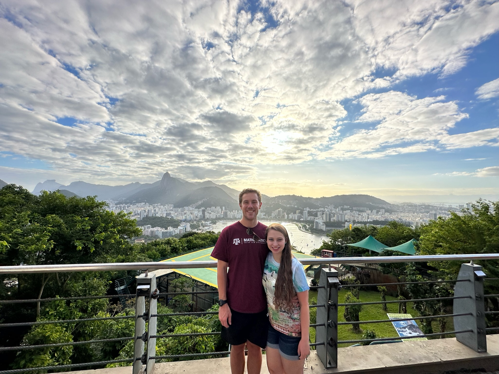
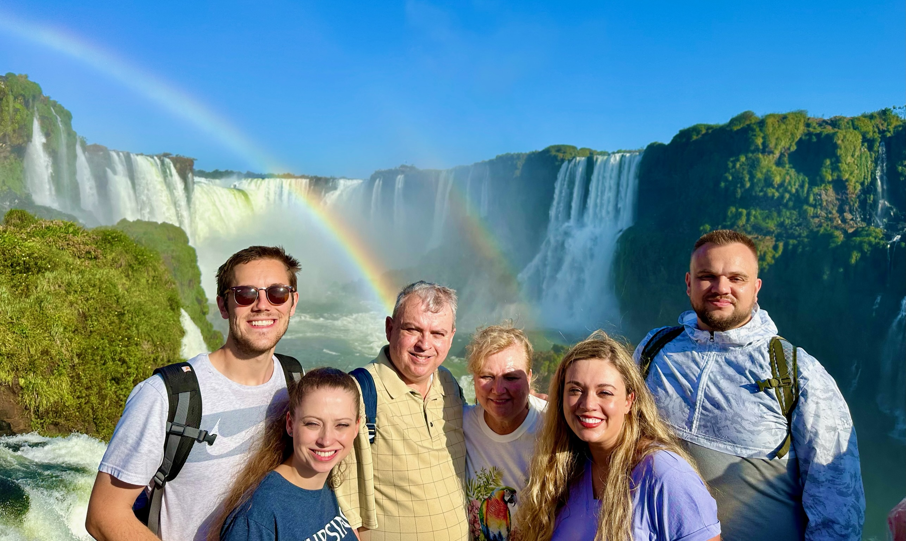
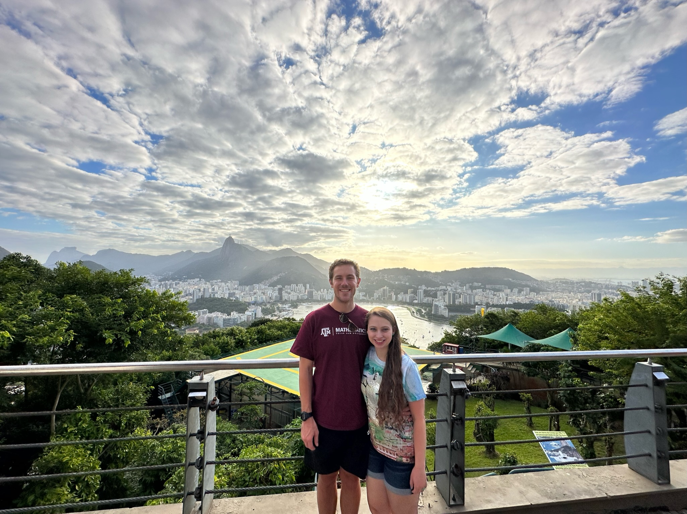
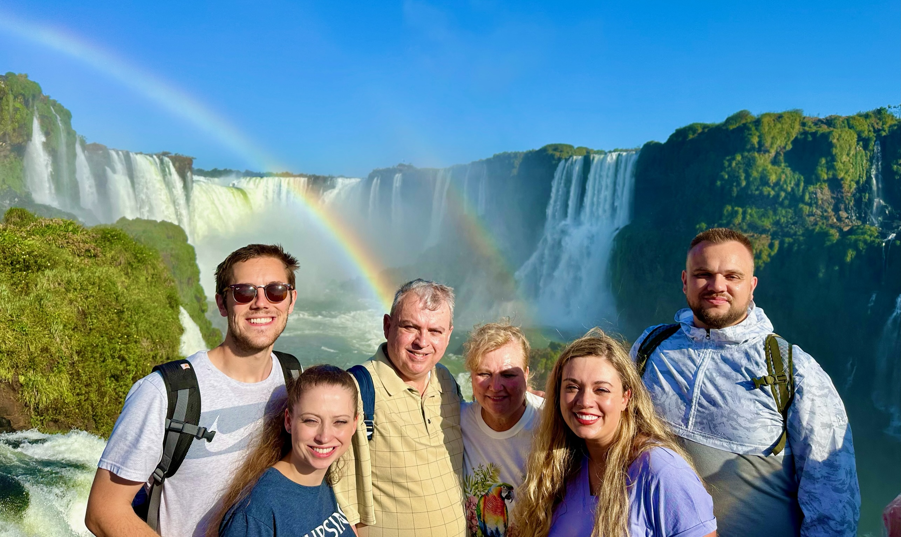

Seminars
The seminars at an institution enable the researchers to easily interact, share ideas, and keep each other updated on their progress. These are some of the seminars I have been a part of.
Texas A&M University

 


